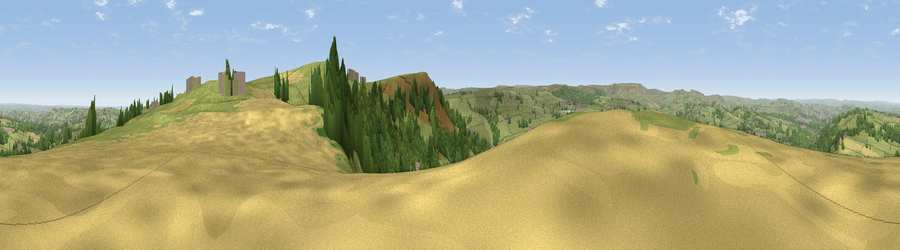

Viewpoint near Jackson Bridge
#6116 in England · top 3% of its area beats it · near Jackson BridgeThe view, rendered

A 360° render of this exact spot computed from the terrain model, tree cover and land cover — summer colours, afternoon light, calibrated against photographs of famous viewpoints. Real trees, hedges and buildings will differ in detail.
The panorama
Grey silhouette: terrain skyline in each direction (720 bearings, Earth curvature and refraction included). Dashed green: skyline with trees (+15 m) and buildings (+8 m) as obstacles. Blue strip: how far the ground is visible on each bearing.
Where the view opens
Wedge length = distance to the farthest visible ground on that bearing (vegetation-aware). Rings at 10, 25 and 50 km.
What fills the view
53% grassland · 32% woodland · 7% cropland · 6% built-up
Angular shares of the visible panorama (visual magnitude), not map area. Landscape diversity 0.47 (0–1 Shannon).
Key numbers
More beautiful places nearby
The staircase of upgrades: each row has a higher view potential than everything closer. Driving times are estimates from straight-line distance, calibrated against real road routing — check an actual route before setting out.
| Place | Direction | Drive | Score |
|---|---|---|---|
| Viewpoint near Jackson Bridge | SE · 1 km | ~2 min | 73.5 |
| Viewpoint near Greenfield | WSW · 18 km | ~31 min | 76.0 |
| Viewpoint near Carrbrook | WSW · 20 km | ~33 min | 77.1 |
| Viewpoint near Otley | N · 37 km | ~55 min | 77.5 |
| Darwen Hill | WNW · 51 km | ~72 min | 80.7 |
| White Brow | W · 51 km | ~72 min | 82.9 |
| Warton Crag | NW · 94 km | ~118 min | 83.2 |
| Beacon Hill | NNE · 96 km | ~121 min | 84.7 |
53.56530, -1.74121 · source: screening · position refined by local search. Computed location — check access rights before visiting.